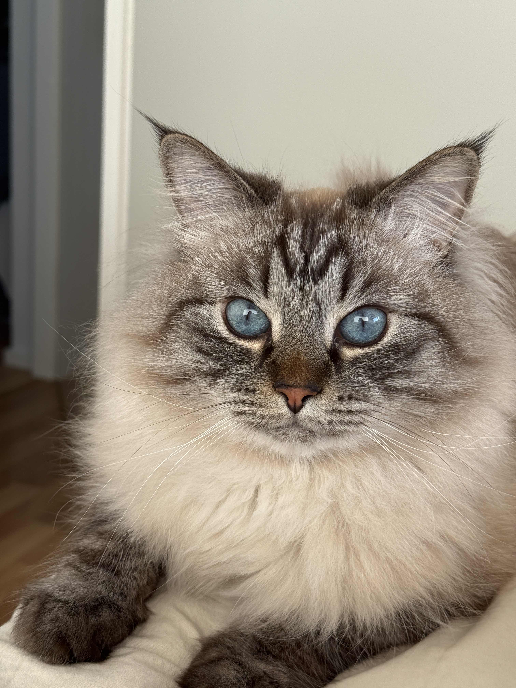

A cat is a small, furry animal that is often kept as a pet. Cats have four legs, sharp claws, whiskers, and a long tail. They are usually independent, clean, and playful. Cats eat meat and enjoy sleeping for many hours each day. They can make different sounds, such as meowing, purring, and hissing. Cats are popular pets because they are friendly, cute, and easy to care for.

Here's a link to a wiki page about cats.